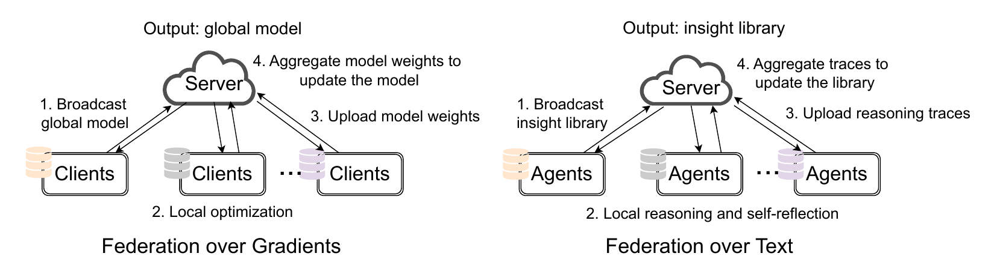
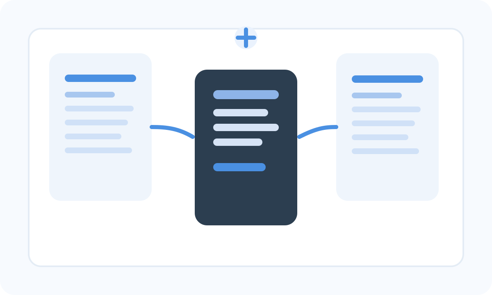

Average downstream accuracy improvement across the math and scientific question answering tasks
Federation over Text: Insight Sharing for Multi-Agent Reasoning
University of Chicago
LLM-powered agents often reason from scratch when presented with a new problem instance and lack automatic mechanisms to transfer learned skills to other agents. We propose a federated learning-like framework, Federation over Text (FoT), that enables multiple agents solving different tasks to collectively generate a shared library of metacognitive insights by iteratively federating their local reasoning processes. Instead of federation over gradients, as in distributed training, FoT operates at the semantic level without any gradient optimization or supervision signal. Iteratively, each agent does local thinking and self-improvement on its specific tasks independently, and shares reasoning traces with a central server, which aggregates and distills them into a cross-task and cross-domain insight library that existing and future agents can leverage to improve performance on related tasks. Experiments show that FoT improves reasoning effectiveness and efficiency across a wide range of challenging applications, including mathematical problem solving, cross-domain collaboration, and machine learning research insight discovery.

Reasoning token reduction across math, science, and coding settings
On PinchBench, average score of FoT with Gemini 3.1 Pro exceeds the best achieved by isolated agents.
Why FoT
FoT starts from a simple observation: agents often solve different tasks in isolation, even when their reasoning contains reusable ideas that could help other agents. Instead of treating each task as a separate session, FoT aggregates reasoning insights from many agents, each working on its own local problem, and turns those distributed experiences into a shared library of reusable guidance.
This also creates a direct bridge to federated learning. Classical federated learning aggregates updates from decentralized clients while keeping raw data local; FoT keeps the same high-level structure, but moves from gradient aggregation to semantic aggregation. Agents keep private tasks local, summarize useful reasoning traces, send them to a server, and receive back a compact insight library for future rounds.
The main contribution is not just another multi-agent workflow. It is a different interface for collaboration: agents do local work, export reusable abstractions, and improve future reasoning without needing gradient access or centralized raw data.
| Component | Federated Learning | Federation over Text |
|---|---|---|
| Learning objective | Learn a global model that generalizes across clients | Learn an insight library that improves reasoning across agents |
| Local work | Local training via optimization | Local task solving via reasoning and self-improvement |
| Local to server | Weights or gradients | Reasoning traces and reusable insights |
| Server aggregation | Average model updates | Distill text-space patterns into a shared library |
| Server to local | Updated global model | Updated insight library |
| Privacy pattern | Keep raw data local | Keep raw tasks and detailed histories local |
| Personalization | Client-specific adaptation | Task-specific reasoning with shared high-level guidance |
How Federation over Text works
Local Reasoning
Each agent solves its own task using any base model and any local reasoning strategy.
Trace Extraction
Agents turn successful reasoning into concise, reusable traces that explain what worked and when to use it.
Server Aggregation
The server clusters related traces, identifies shared patterns, and distills them into a compact insight library.
Broadcast and Reuse
The updated library goes back to agents and becomes an external reasoning prior for the next round.
Algorithm
Federation over Gradients
-
For each iteration
- For each client, perform local optimization starting from the current global model.
- Upload new model weights to the server.
- The server collects all local model weights.
- Aggregate over model weights.
- Broadcast the updated global model back to clients.
Federation over Text
-
For each iteration
- For each agent, perform local reasoning given the base LLM and current insight library.
- Upload reasoning traces to the server.
- The server gathers and aggregates all reasoning traces.
- Update the insight library.
- Broadcast the new library back to agents.
Applications
Mathematical Problem Solving
Collaboration: Math, Science, Coding

Research Insight Discovery
Daily Agent
Citation
@misc{yao2026federationtextinsightsharing,
title={Federation over Text: Insight Sharing for Multi-Agent Reasoning},
author={Dixi Yao and Tahseen Rabbani and Tian Li},
year={2026},
eprint={2604.16778},
archivePrefix={arXiv},
primaryClass={cs.LG},
url={https://arxiv.org/abs/2604.16778},
}